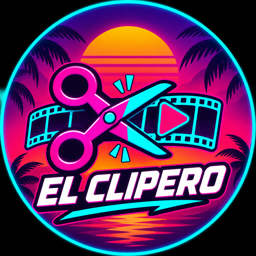

El CliperoPrivacy Policy
Last updated: November 18, 2026
What the app is
El Clipero Uploader is a private desktop tool used only by the El Clipero team to send our own edited gaming clips to our own TikTok accounts as drafts.
Data we access
When an account owner connects their TikTok account, the app receives, through TikTok's official API, the basic profile (open_id, display name and avatar) and an access token that allows uploading videos to that account's drafts (scopes user.info.basic and video.upload).
How we use it
This data is used only to show which account is connected and to upload videos to that same account. The access token is stored locally on our own computer and is never sold, shared or transferred to third parties. We do not collect data from viewers or from any other TikTok users.
Retention and deletion
Tokens are kept only while the account stays connected. The account owner can revoke access at any time from TikTok's settings (Security > Manage app permissions), after which we delete the stored token.
Children
The app is not directed to children and is not used by anyone outside our team.